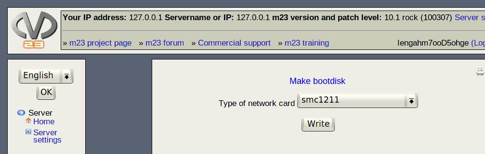

In this dialog you can create a bootdisk for installing m23 clients. This disk is only used for the first installation. Alternatively, you can use the ''boot ROM'' on your network card if it supports PXE or Etherboot.

Step by step:
- Insert a floppy disk in the first disk drive (A:) in your server.
- Choose the type of your network card.
- Click on ''Write''.
root
2015-04-30